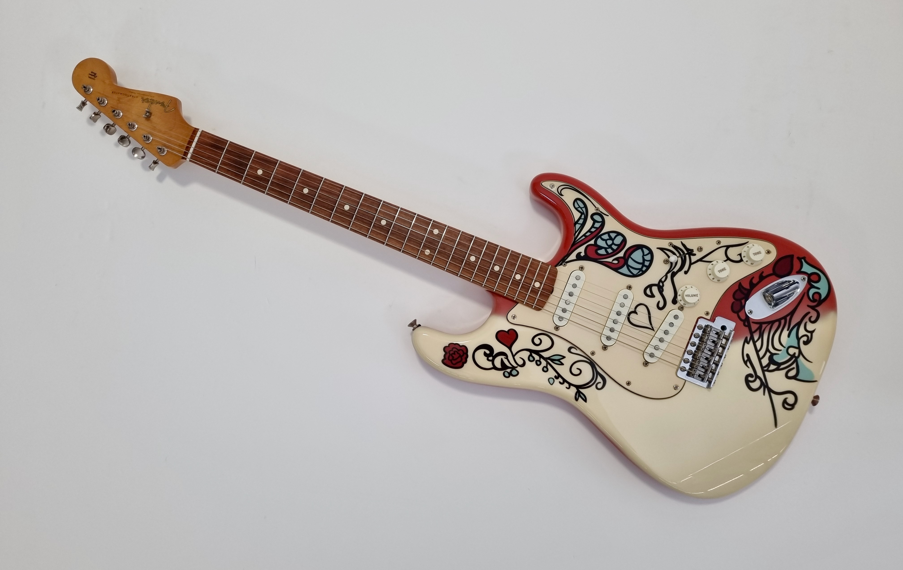

My Interests and Hobbies
While I love coding and computer science, outside of those two subjects I have many, many, many interests and hobbies that keep me happy and motivated. Here are somethings that I am passionate for.
Music
I have played guitar for four years and have preformed live in front of crowds many times. I specialize in rock, metal, and blues and have preformed in many metal and rock bands. I have always loved music and have a wide music taste. I love funk, disco, metal, rock, blues, and hip-hop. I also play piano and specialize in blues and I also collect records. I have many records by Micheal Jackson and Prince.
Sports

I enjoy a lot of sports. I especially love volleyball, I am a outside hitter and love playing it. It is just so much fun, so I do as many camps as possible. And right now I am part of a club team. I hope to get on the volleyball team for Bergen Tech. I also love playing tennis.
Video Games
I really enjoy a lot of video games. And I have enjoyed them for as long as I can really remember. Its one of the most calming things for me. I like a wide range of games, normally for various reasons.
- Games I like
- Minecraft - for its sandbox elements
- WorldBox - for its sandbox elements
- COD Black OPS 1-3 - for its fun couch Co-op
- Ghost of Tsushima - for its story and combat
- Bioshock - for its story
- Borderlands 3 - for its combat
- Helldivers 2 - for its community and gameplay
How my Interests connect
My interests all connect to make computer science the thing for me. Volleyball taught me teamwork and how to work with others, which is useful for working in teams at software firms, video games got me into coding, and music taught me the patience needed to learn an entire new coding language.